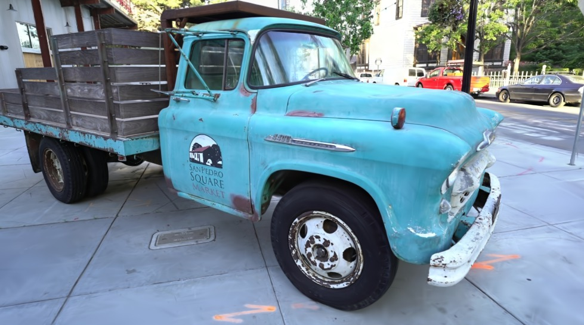

不止是一张照片。
绕到卡车的另一边，看看 257 万个高斯重建出的场景。
完整模型压缩版 · 首次加载约 151 MiB
建议使用电脑上的 Chrome / Edge，并开启硬件加速。
准备下载…
TRUCK / TANKS & TEMPLES 30,000 ITERATIONS

绕到卡车的另一边，看看 257 万个高斯重建出的场景。
完整模型压缩版 · 首次加载约 151 MiB
建议使用电脑上的 Chrome / Edge，并开启硬件加速。
准备下载…